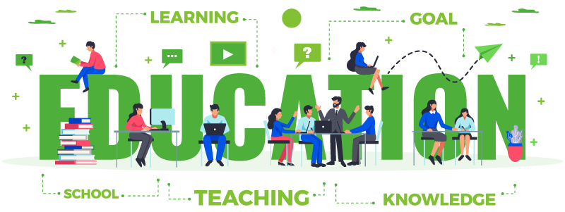

A teacher is a person
who helps students to
acquire knowledge,
competence or
virtue.
Teachers are best known for the role of educating the
students that are placed in their
care. Beyond that,
teachers serve many other roles in the classroom.
Teachers set the tone of their
classrooms, build a warm
environment, mentor and nurture students, become role
models, and listen and
look for signs of trouble.
Teacher & Student Are May Be Perfect Pair In World!
What We Do Best
Teachers Are Role Models
Change way of thinking!
Did your teacher encourage you to take risks? Did he or she help you speak up more in class,
or have more patience with solving problems?
Change your life direction!
Did they help you uncover a unique talent, or steer you away from a dangerous life path? How
did this change your eventual direction in life?
Help to find right path of life.
Share an interesting story!
Actions speak louder than words..And your story doesn’t have to be serious! A teacher’s
impact often shines through the most.Share real story about you career.
Motivating Students
One of the most difficult aspects of becoming a teacher is learning how to motivate your
students. It is also one of the most important. Students who are not motivated will not learn
effectively.
Work on personality!
Personality is part of your perfectness, it’s most impected think of our body. Personality
is class feature for everyone like business men, teacher, student, officer, tutor.Read more and
expand your interests.
Talk on reality
Even trying to define what we mean by “reality” is fraught with difficulty. It’s relatively
easy to demonstrate what physical reality isn’t. It is much harder to work out what it is.
Online Or Offline Education Theme
Create Your Career In
IT[Information Technology]
An offline learning system is a type of client procedure that can allow users
to study courses using their personal computer as well as allow faculty to track and record their
learning. Students can download encrypted teaching course material and achieve real-time learning by
in- stalling an offline learning system.
The application of online techniques to provide learning to candidates at a distance. Learn
more in: Technology and Learning: Preparing Teachers for the Future. Delivers instruction using a
computer network, usually the Internet, without requiring face-to-face meetings of students and
faculty.
15
Passout Student
8
Course's
25
It Lunguage
10
Trainer
BCA / MCA Subject
We take a class of all subject that is running in BCA and MCA as per course of VNSGU and other university
- All IT language like ‘C’, ‘C++’, Java
- Software engineering
- Operating system
- Database like access, oracle, SQL, MYSQL
- Maths
- Flutter Devlopment
Project Training
We provide training to final year student of IT in verious technology. Complete solution of final year project.
- Web development in PHP
- Web development in ASP
- PHP framework
- Android application
- Game development in UNITY
- Flutter Application
- Software
- Digital Marketing
Web Development
Perfect web development traing with all content. we focus on practical, not say but do.
- HTML / HTML5
- CSS / CSS3
- Operating system
- Javascript / JQuery
- Bootstrap / Material CSS
- AJAX / node.js
- PHP / PHP5
- MYSQL / MongoDB
- API Calling
Graphic Design
Perfect solution of all type of graphics like poster, UI/UX, banner etc. graphics is unique identity of any variable.
- Web Design
- App UI/UX Design
- Game 2D/3D Design
- Graphics Design
- Motion Graphics
- Game interfaces
App Development
Professional training on application development with android(java/kotlin) and flutter.
- XML layout
- Advance java concept
- Android content
- API calling
- Payment gateway
- In app purchase
- Librery implementation
Framework
Framework mean platform of web development that is make web fast and easy.
- WordPress
- Laravel
- CodeIgniter
- CakePHP
- FuelPH
- Angular
- Django

The C programming language came out of Bell Labs in the early 1970s. According to the Bell Labs paper The Development of the C Language by Dennis Ritchie, “The C programming language was devised in the early 1970s as a system implementation language for the nascent Unix operating system.
C is a powerful general-purpose programming language. It can be used to develop software like operating systems, databases, compilers, and so on. C programming is an excellent language to learn to program for beginners. Our C tutorials will guide you to learn C programming one step at a time.
- In 1972
- Dennis Ritchie

Before the initial standardization in 1998, C++ was developed by Danish computer scientist Bjarne Stroustrup at Bell Labs since 1979 as an extension of the C language; he wanted an efficient and flexible language similar to C that also provided high-level features for program organization.
C++ is a powerful general-purpose programming language. It can be used to develop operating systems, browsers, games, and so on. C++ supports different ways of programming like procedural, object-oriented, functional, and so on. This makes C++ powerful as well as flexible.
- In 1979
- By Bjarne Stroustrup

Java was started as a project called "Oak" by James Gosling in June 1991. Gosling's goals were to implement a virtual machine and a language that had a familiar C-like notation but with greater uniformity and simplicity than C/C++. The first public implementation was Java 1.0 in 1995.
Java can be used to create complete applications that may run on a single computer or be distributed among servers and clients in a network. It can also be used to build a small application module or applet (a simply designed, small application) for use as part of a Web page.
- In 1995
- By James Gosling
C# was developed by Microsoft within its .NET framework initiative and later approved as a standard by ECMA (ECMA-334) C# programming language is a general-purpose, OOPS based programming language. C# development team was lead by "Anders Hejlsberg" in 2002.
NET platform. The first version was released in 2001. The most recent version is C# 8.0, which was released in September 2019. C# is a modern language.
- In 2001
- By Microsoft Corporation
PHP was written in the C programming language by Rasmus Lerdorf in 1994 for use in monitoring his online resume and related personal information. ... Lerdorf combined PHP with his own Form Interpreter, releasing the combination publicly as PHP/FI (generally referred to as PHP 2.0) on June 8, 1995.
Rasmus Lerdorf unleashed the first version of PHP way back in 1994. PHP is a recursive acronym for "PHP: Hypertext Preprocessor". PHP is a server side scripting language that is embedded in HTML. It is used to manage dynamic content, databases, session tracking, even build entire e-commerce sites.
- In 1994
- By Rasmus Lerdorf

Active Server Pages (ASP) is Microsoft's first server-side scripting language and engine for web pages that change by time or other circumstances. It was first released in December 1996, before being superseded in January 2002 by ASP.NET.
Microsoft has still kept support for Classic ASP over the IIS versions: The use of ASP pages will be supported on Windows 8 for a minimum of 10 years from the Windows 8 release date. By all accounts, Microsoft is slated to continue providing bug fixes and support for Classic ASP for some time.
- In 1996
- By Microsoft's
J# worked with Java bytecode as well as source so it could be used to transition applications that used third-party libraries even if their original source code was unavailable. It was developed by the Hyderabad-based Microsoft India Development Center at HITEC City in India.
Microsoft Visual J# .NET is a development tool that developers who are familiar with the java-language syntax can use to build applications and services on the .
- In 2002
- By Microsoft

Python was conceived in the late 1980s by Guido van Rossum at Centrum Wiskunde & Informatica (CWI) in the Netherlands as a successor to the ABC language (itself inspired by SETL), capable of exception handling and interfacing with the Amoeba operating system. Its implementation began in December 1989.
Guido van Rossum is one of the world's most influential programmers. Van Rossum is the author of the general-purpose programming language Python, which he started working on in 1989, and is now among the most popular languages in use.
- In 1980
- By Guido van Rossum

Visual Basic 1.0 was introduced in 1991. The drag and drop design for creating the user interface is derived from a prototype form generator developed by Alan Cooper and his company called Tripod. ... Microsoft decided to combine Ruby with the Basic language to create Visual Basic.
Visual Basic is a programming language and development environment created by Microsoft. The Visual Basic program also includes features like "IntelliSense" and "Code Snippets," which automatically generate code for visual objects added by the programmer.
- In 1998
- By Alan Cooper

There are two native programming languages for iOS—Objective-C and Swift. This becomes abundantly clear as soon as you start your first project in Xcode. After pressing to create a new application, you are taken to a page where you need to name your new project. You also have to pick a language, either Objective-C or Swift, to start you project.
Next off, the language is designed to be safer than Objective-C. This is due to Swift’s strong typing system and error handling. The use of optionals, and the techniques that go with them, help prevent errors of null pointers and prevent pyramid of doom situations. Of course, incorrect use of forced unwrapping can lead to issues in Swift, but it is designed to be safer if coded properly.
– In 2010
– By Chris Lattner
Committed To People, Committed To The Future